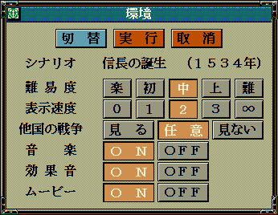
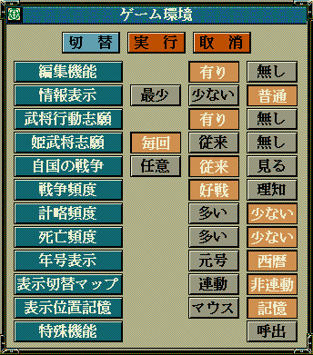

環境設定とは端的に言えば、下記の画面に対応する値の「読み書き」をゲーム中いつでも行えるものです。


void カスタム::On_相場変更直前() {
// ------ 基本的な環境設定 ----------
// 難易度を難に設定
p環境設定情報.難易度 = 難易度::難;
// 表示速度を３に設定
p環境設定情報.表示速度 = 表示速度::３;
// もちろんこのように値の取得や比較も可能だ
if (p環境設定情報.他国の戦争 == 他国の戦争::任意) {
// 見ないに設定
p環境設定情報.他国の戦争 = 他国の戦争::見ない;
}
// 音楽をＯＦＦに設定
p環境設定情報.音楽 = 音楽::ＯＦＦ;
// 効果音をＯＮに設定
p環境設定情報.効果音 = 効果音::ＯＮ;
// ムービーをＯＮに設定
p環境設定情報.ムービー = ムービー::ＯＮ;
// ------ 拡張項目の環境設定 ----------
p環境設定拡張情報.編集機能 = 編集機能::無し;
p環境設定拡張情報.情報表示 = 情報表示::最小;
p環境設定拡張情報.武将行動志願 = 武将行動志願::無し;
p環境設定拡張情報.姫武将志願 = 姫武将志願::従来;
// もちろんこのように値の取得や比較も可能だ
if (p環境設定拡張情報.自国の戦争 == 自国の戦争::任意) {
p環境設定拡張情報.自国の戦争 = 自国の戦争::見る;
}
p環境設定拡張情報.戦争頻度 = 戦争頻度::好戦;
p環境設定拡張情報.計略頻度 = 計略頻度::多い;
p環境設定拡張情報.死亡頻度 = 死亡頻度::多い;
p環境設定拡張情報.年号表示 = 年号表示::元号;
p環境設定拡張情報.表示切替マップ = 表示切替マップ::連動;
p環境設定拡張情報.表示位置記憶 = 表示位置記憶::マウス;
}
「環境設定」に関する主な所は以上となります。 詳しくは「環境設定情報型.h」や「環境設定情報列挙.h」などを参照してください。